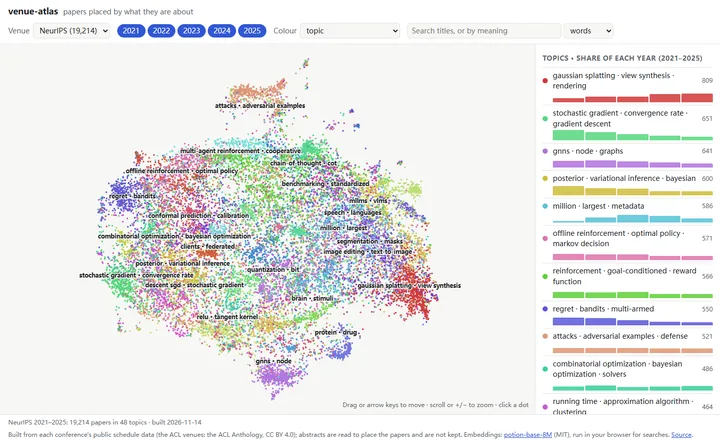
research-kit
Open tools for every step of research
From following new papers to after publication: 15 tools of ours, each a command and an agent skill, and 172 of the best open projects on GitHub, chosen stage by stage. Rules and public data; no language model reads your paper.
- 15tools of ours
- 172projects from GitHub
- 16venues with deadlines
- 14open needs
Our tools
Each runs from one command with uv, needs no account, and comes with a skill for Claude Code and other agents.
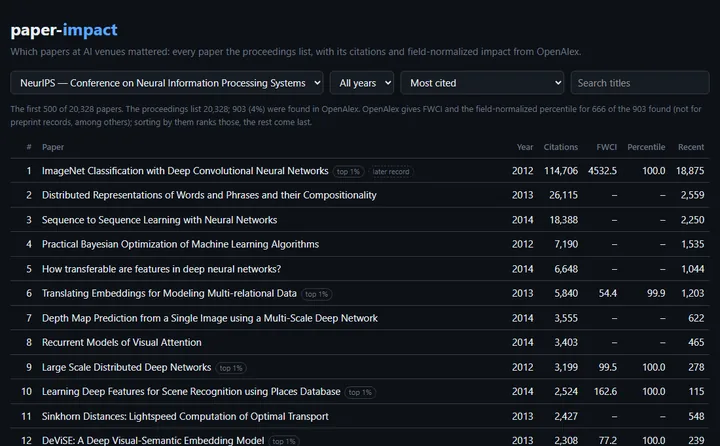
Find and read
paper-impact
Which papers at AI venues mattered: every NeurIPS, ICML, ICLR, CVPR and ACL paper with its citations and field-normalized impact from OpenAlex, and how much OpenAlex covers. A free OpenAlex key makes a full build days, not months.
curl -LO https://raw.githubusercontent.com/zch6a/paper-impact/v0/venues.json$ table-trace compare 1512.03385 2201.03545 ...
20.74 (lower is better) ResNet-50 | top-1 err.
76.13 2201.03545 Table 10: ResNet-50 (PyTorch)
78.82 ± 0.07 ResNet-50 (enhanced recipe)Find and read
table-trace
Every number in a paper's tables, read from its LaTeX source and traced to its cell; and what papers report for the same model on the same benchmark, side by side; table-trace settings shows how each paper evaluated on a benchmark (shots, chain of thought, decoding, harness) and what differs.
uvx --from git+https://github.com/zch6a/table-trace@v0 table-trace compare 1512.03385 2201.03545 --row ResNet-50 --col top-1 --col acc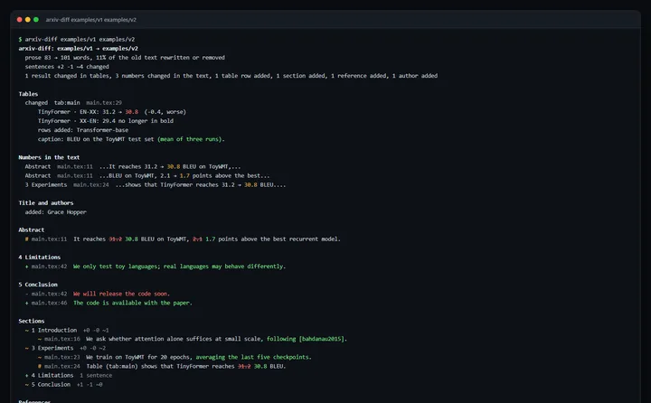
Find and read
arxiv-diff
What changed between two versions of a paper: the result numbers in its tables by row and column, and the text, abstract, authors, figures and references. arxiv-diff watch tells you which arXiv papers in your .bib posted a new version.
uvx --from git+https://github.com/zch6a/arxiv-diff@v0 arxiv-diff 2106.09685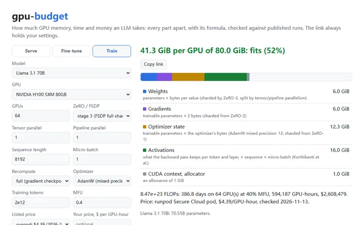
Run experiments
gpu-budget
How much GPU memory, time and money training, fine-tuning or serving an LLM takes, each part with its formula (ZeRO/FSDP, parallelism, MoE, LoRA/QLoRA, KV cache), checked against published runs.
npx github:zch6a/gpu-budget#v0 train llama-3.1-70b --gpus 64 --zero 3 --tokens 2e12 --price 2.5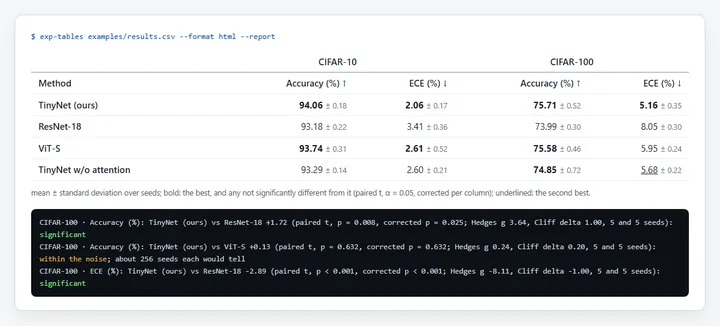
Run experiments
exp-tables
Experiment results to your paper's table: mean ± spread over seeds, significance against the best, bold only where the seeds support it; from CSV, wandb, TensorBoard or MLflow.
uvx --from git+https://github.com/zch6a/exp-tables@v0 exp-tables results.csv --format markdown$ repro-score path/to/repo
repro-score: paper-code: 65/100
Dependencies 11/20
~ versions pinned (2 of 5) 4/7
requirements.txt:4: pyyamlAfter it is out
repro-score
Can someone reproduce your paper from your code? A score out of 100 for a research code repository, item by item with the file and line behind it, read from the files with nothing run; repro-score release checks that the version, tags, CITATION.cff and DOIs agree.
uvx --from git+https://github.com/zch6a/repro-score@v0 repro-score github:owner/repo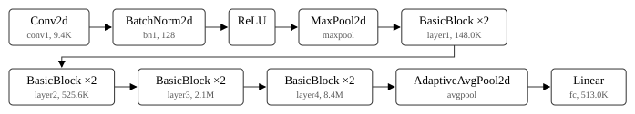
Write the paper
fig-check
A paper's figures as they will print: text size at the printed scale, colours that collapse for colour-blind readers, raster resolution; for every figure of a LaTeX project. paper_style makes matplotlib figures at the column width, in the paper's font; diagram turns a PyTorch model into an editable TikZ architecture figure.
uvx --from git+https://github.com/zch6a/fig-check@v0 fig-check paper/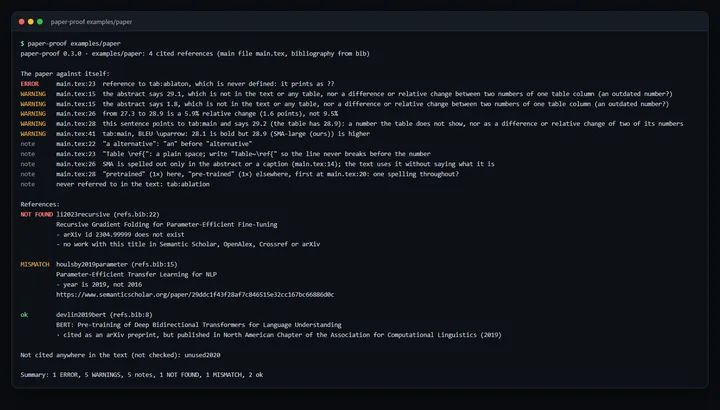
Submit
paper-proof
Check your paper before reviewers do: invented or wrong references, bold results that are not the best, claimed gains that do not add up, stale abstract numbers, broken labels, and the paper against itself (an acronym spelled out two ways, one term written two ways), and style slips seen through the LaTeX (a word twice, a/an, Figure~\ref). With --fix, a corrected copy of the .bib (preprints replaced by their published versions, years and DOIs a Crossref record vouches for). With --review, points for a reviewer to check in a submitted PDF, sending nothing.
uvx --from git+https://github.com/zch6a/paper-proof@v0 paper-proof path/to/paper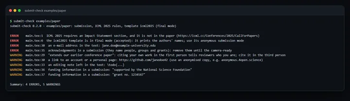
Submit
submit-check
Don't get desk-rejected for a slip: a LaTeX paper checked against the venue's rules (double-blind leaks, template mode, page limit, required sections, PDF fonts, leftover TODOs), the supplementary zip checked for names, paths, .git and file metadata, and a camera-ready for what the review version left behind.
uvx --from git+https://github.com/zch6a/submit-check@v0 submit-check path/to/paper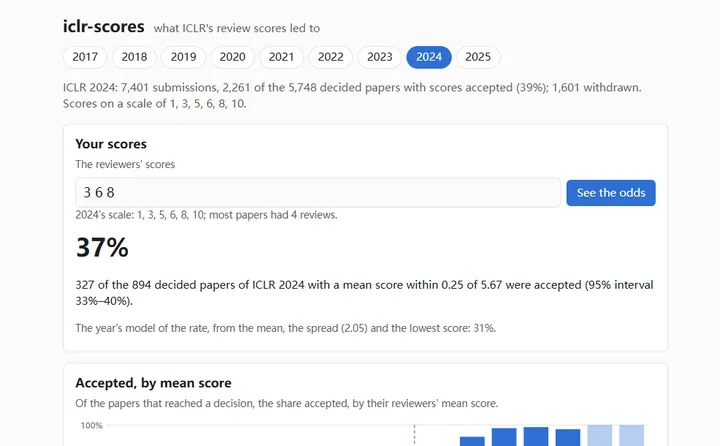
$ rebuttal status Rebuttal: SMA: 8 points, 1 done, 2 doing, 4 todo Scores changed: Qm2t 6 -> 7 (+1) xK9p rating 5 2/5 answered reply 208 / 5,000
Submit
rebuttal-board
A rebuttal tracked point by point: reviews pasted from OpenReview or CMT split into points, a Markdown tracker with each point's status, experiment and answer, each reply's length against the limit, and score changes. Offline.
uvx --from git+https://github.com/zch6a/rebuttal-board@v0 rebuttal init reviews.txt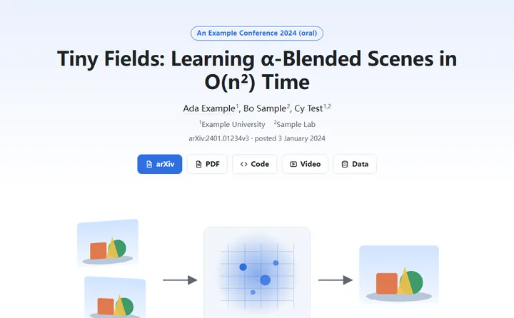
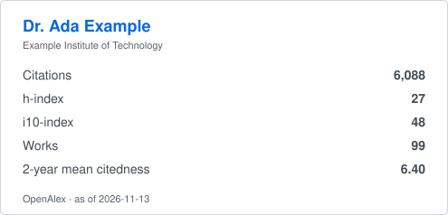
After it is out
scholar-cards
Your citations, h-index and most cited papers from OpenAlex as SVG cards for an academic homepage or a GitHub profile, kept fresh by a GitHub Action; no API key; scholar-cards cited lists who cites a paper and what they say, new citations first.
uvx --from git+https://github.com/zch6a/scholar-cards@v0 scholar-cards search "Your Name"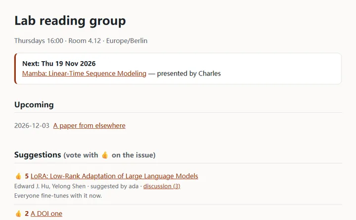
After it is out
reading-group
A reading group run from one GitHub repository: papers suggested as issues and voted with a thumbs-up, the schedule and notes in the repository, a page and a calendar built by a GitHub Action.
uvx --from git+https://github.com/zch6a/reading-group@v0 reading-group next --repo OWNER/NAMEInstall as agent skills
Our tools need uv (gpu-budget: Node 22+). In Claude Code, add the marketplace once, then install the tools you want by name:
/plugin marketplace add zch6a/research-kit
/plugin install table-trace@research-kitThe best of the rest
Open projects for each stage, with stars, licence and last update from the GitHub API on 2026-11-14. A licence marked “none” means the repository has none: ask before reusing it.
Find and read
| Project | What it does | Stars | Licence | Updated |
|---|---|---|---|---|
| zotero-arxiv-dailyKeeping up with new papers | Emails you a daily list of new arXiv papers ranked by similarity to the papers already in your Zotero library, with LLM-written TL;DRs. | 6.2k | AGPL-3.0 | 2026-11 |
| daily-arXiv-ai-enhancedKeeping up with new papers | Crawls chosen arXiv categories every day, summarises each paper with an LLM and publishes a browsable GitHub Pages site. | 3k | other | 2026-09 |
| arxiv-sanity-liteKeeping up with new papers | Self-hosted arXiv browser where you tag papers you like and get recommendations of similar new papers. | 1.7k | MIT | 2023-06 |
| cv-arxiv-dailyKeeping up with new papers | Template that keeps a Markdown table of new arXiv papers per keyword, updated daily by GitHub Actions, with code links. | 1.5k | Apache-2.0 | 2026-11 |
| agents-radarKeeping up with new papers | Daily AI ecosystem digest merging GitHub, arXiv, Hugging Face, Hacker News and other sources into one report. | 1.2k | MIT | 2026-11 |
| daily-paper-readerKeeping up with new papers | Daily arXiv and OpenReview recommendations with AI reading and paper Q&A, deployed on GitHub Pages via Actions. | 979 | MIT | 2026-10 |
| papers.coolKeeping up with new papers | Code for Cool Papers, a fast feed of new arXiv papers and conference proceedings with one-click LLM explanations (Kimi) per paper. | 820 | none | 2026-07 |
| WisparKeeping up with new papers | Mobile and desktop app that follows journals' table-of-contents feeds and new articles, with open-access lookup. | 226 | GPL-3.0 | 2026-11 |
| arxiv-mcp-serverSearching the literature | MCP server that lets an AI assistant search arXiv, read paper sections from the LaTeX source and fetch BibTeX. | 3.3k | Apache-2.0 | 2026-10 |
| scholarlySearching the literature | Fetches author profiles and publication data from Google Scholar from Python. | 1.9k | Unlicense | 2026-03 |
| OpenScholarSearching the literature | Retrieval-augmented LLM that answers scientific questions with citations drawn from a 45M-paper open corpus. | 1.7k | Apache-2.0 | 2025-08 |
| pasaSearching the literature | LLM agent that runs searches, reads papers and follows citations on its own to answer a detailed literature query. | 1.7k | Apache-2.0 | 2025-05 |
| arxiv.pySearching the literature | Python wrapper for the arXiv API: query, page through results and download PDFs or source. | 1.6k | MIT | 2026-11 |
| asreviewSearching the literature | Active-learning screening for systematic reviews: you label a few titles/abstracts, it ranks the rest by likely relevance. | 1.1k | Apache-2.0 | 2026-11 |
| semanticscholarSearching the literature | Python client for the Semantic Scholar APIs: paper and author search, citations, references and recommendations. | 485 | MIT | 2026-08 |
| pyalexSearching the literature | Python client for OpenAlex: works, authors, venues and citation links with filters and paging. | 432 | MIT | 2026-10 |
| ai2-scholarqa-libSearching the literature | Library and app behind Ai2 Scholar QA: multi-step search over Semantic Scholar that writes a sectioned, cited literature answer. | 289 | Apache-2.0 | 2026-10 |
| LocalCitationNetwork.github.ioSearching the literature | Browser app that builds the citation network around a set of seed papers (OpenAlex, Semantic Scholar, Crossref) to find missing related work. | 150 | GPL-3.0 | 2026-05 |
| zoteroManaging references | Desktop reference manager that collects papers from the browser, stores PDFs, annotates and inserts citations into Word/LibreOffice. | 15.9k | other | 2026-11 |
| jasminumManaging references | Zotero plugin that fetches metadata for Chinese papers from CNKI and fixes Chinese name and attachment issues. | 7.4k | AGPL-3.0 | 2026-11 |
| zotero-better-bibtexManaging references | Zotero plugin that gives stable citation keys and keeps an auto-exported .bib file in sync for LaTeX. | 7.3k | MIT | 2026-11 |
| zotero-mcpManaging references | MCP server that lets AI assistants search, read and annotate your Zotero library, including semantic search. | 5.9k | MIT | 2026-11 |
| jabrefManaging references | Desktop manager that edits .bib/.biblatex files directly, with DOI/arXiv lookup, duplicate detection and citation-key patterns. | 4.9k | MIT | 2026-11 |
| rebiberManaging references | Replaces arXiv entries in a .bib file with their published versions from DBLP and the ACL Anthology. | 3k | MIT | 2026-11 |
| papisManaging references | Command-line document and bibliography manager that stores papers as plain folders with YAML metadata. | 1.8k | GPL-3.0 | 2026-11 |
| bibtex-tidyManaging references | Cleans and formats BibTeX files: sorts, removes duplicates, normalises fields; CLI and web page. | 1.1k | MIT | 2026-10 |
| zotero-format-metadataManaging references | Zotero plugin that lints and normalises item metadata: title case, journal abbreviations, languages, duplicates. | 1.1k | AGPL-3.0 | 2026-11 |
| betterbibManaging references | Command-line tools that update .bib entries from Crossref/DBLP, fetch BibTeX from a DOI and sync fields. | 842 | none | 2026-11 |
| MinerUReading and taking notes | Converts PDFs, including formulas and tables, into Markdown/JSON for reading in other tools or feeding to an LLM. | 83.6k | other | 2026-11 |
| gpt_academicReading and taking notes | LLM workbench with one-click paper actions: full-text PDF/LaTeX translation, summarisation, polishing and arXiv paper reading. | 71.7k | GPL-3.0 | 2026-01 |
| open-notebookReading and taking notes | Self-hosted NotebookLM alternative: add papers and sources, chat with them, take notes, make audio overviews. | 41.9k | MIT | 2026-11 |
| PDFMathTranslateReading and taking notes | Translates scientific PDFs while keeping formulas, figures and layout, outputting a translated or side-by-side bilingual PDF. | 38.4k | AGPL-3.0 | 2026-11 |
| zotero-pdf-translateReading and taking notes | Zotero plugin that translates selected text, annotations, titles and abstracts with 20+ engines while reading. | 12.3k | AGPL-3.0 | 2026-11 |
| sioyekReading and taking notes | Keyboard-driven PDF viewer for papers: previews references and figures on hover, smart jump, portals and searchable highlights. | 10k | GPL-3.0 | 2026-11 |
| paper-qaReading and taking notes | Answers questions over a folder of papers with retrieval and cited, checked answers (PaperQA2). | 9.6k | Apache-2.0 | 2026-11 |
| zotero-better-notesReading and taking notes | Zotero plugin for linked notes, note templates, outlines and syncing notes to Markdown. | 8.5k | AGPL-3.0 | 2026-11 |
| zotero-pdf2zhReading and taking notes | Zotero plugin that runs PDFMathTranslate on a paper and attaches the bilingual PDF back to the item. | 8.3k | AGPL-3.0 | 2026-11 |
| zotero-gptReading and taking notes | Zotero plugin to chat with the open PDF or selected items using an LLM, and to summarise or tag them. | 7.5k | AGPL-3.0 | 2026-10 |
| grobidReading and taking notes | Extracts header metadata, sections and a parsed reference list from scholarly PDFs into TEI XML. | 5.2k | Apache-2.0 | 2026-11 |
| autoresearchAI research assistants | Lets coding agents run many small single-GPU training experiments overnight and keep what improves the metric. | 100k | none | 2026-03 |
| deer-flowAI research assistants | Multi-agent harness that searches, runs code in a sandbox and writes reports for long research tasks. | 85.3k | MIT | 2026-11 |
| stormAI research assistants | Researches a topic and writes a Wikipedia-style survey article with citations, useful as a first map of an unfamiliar area. | 31.9k | MIT | 2025-09 |
| gpt-researcherAI research assistants | Deep-research agent that searches the web or your own documents and writes a cited report with any LLM provider. | 30.7k | Apache-2.0 | 2026-11 |
| AI-Scientist-v2AI research assistants | End-to-end 'AI scientist': proposes ideas, runs experiments via agentic tree search, and drafts a workshop-style paper. | 7.5k | other | 2025-12 |
Run experiments
| Project | What it does | Stars | Licence | Updated |
|---|---|---|---|---|
| rayRunning and tracking experiments | Distributed compute framework whose Ray Tune module runs hyperparameter searches in parallel across GPUs and nodes. | 44.3k | Apache-2.0 | 2026-11 |
| mlflowRunning and tracking experiments | Logs parameters, metrics and artifacts of each run to a local or self-hosted server and lets you compare runs in a web UI. | 28.8k | Apache-2.0 | 2026-11 |
| optunaRunning and tracking experiments | Hyperparameter search with pruning of bad trials, a define-by-run API and a dashboard for studies. | 15k | MIT | 2026-11 |
| hydraRunning and tracking experiments | Composes experiment configs from YAML files and command-line overrides, and launches sweeps over them. | 10.7k | MIT | 2026-11 |
| cookiecutter-data-scienceRunning and tracking experiments | Generates a standard folder layout for a data-science or research project so data, code and results stay separated. | 10.1k | MIT | 2026-11 |
| clearmlRunning and tracking experiments | Tracks experiments automatically and adds a task queue and agents so runs can be cloned and re-run on other machines. | 6.9k | Apache-2.0 | 2026-11 |
| aimRunning and tracking experiments | Self-hosted experiment tracker with a fast UI for querying and comparing thousands of runs and their metric curves. | 6.3k | Apache-2.0 | 2026-11 |
| lightning-hydra-templateRunning and tracking experiments | Project template combining PyTorch Lightning and Hydra with logging, testing and experiment-config conventions. | 5.4k | none | 2026-06 |
| SwanLabRunning and tracking experiments | Lightweight experiment tracker with a W&B-like API, offline or self-hosted dashboard, popular with Chinese labs. | 4.4k | Apache-2.0 | 2026-11 |
| trackioRunning and tracking experiments | Drop-in replacement for the wandb logging API that stores runs locally and can show the dashboard on a Hugging Face Space. | 1.8k | MIT | 2026-11 |
| uvCompute and environments | Very fast Python package and environment manager with lockfiles, making research environments quick to recreate. | 92k | Apache-2.0 | 2026-11 |
| nvtopCompute and environments | htop-like GPU monitor that works for NVIDIA, AMD, Intel and Apple GPUs. | 11.2k | other | 2026-11 |
| skypilotCompute and environments | Runs the same job YAML on any cloud, Kubernetes or Slurm cluster, picking the cheapest available GPUs and using spot instances. | 10.8k | Apache-2.0 | 2026-11 |
| pixiCompute and environments | Conda-ecosystem package manager with per-project lockfiles, covering CUDA and non-Python dependencies. | 8k | BSD-3-Clause | 2026-11 |
| nvitopCompute and environments | Interactive GPU process viewer showing per-process memory, utilisation and owner, also usable as a Python library. | 7.3k | Apache-2.0 | 2026-11 |
| slurmCompute and environments | The batch job scheduler used on most university and national HPC clusters. | 4.5k | other | 2026-11 |
| gpustatCompute and environments | One-line-per-GPU status of memory, utilisation and users, handy for scripts and checking who is using a shared box. | 4.4k | MIT | 2026-10 |
| dstackCompute and environments | Open-source orchestrator for dev environments, training jobs and services on clouds and on-prem GPU fleets. | 2.3k | MPL-2.0 | 2026-11 |
| apptainerCompute and environments | Container runtime (formerly Singularity) that runs images without root, the usual way to use containers on HPC clusters. | 2k | other | 2026-11 |
| submititCompute and environments | Submits Python functions as Slurm jobs and returns results like futures, so sweeps run on a cluster from plain Python. | 1.6k | MIT | 2026-11 |
| task-spoolerCompute and environments | A job queue for one machine: commands wait their turn and each gets free GPUs (ts -G). | 448 | GPL-2.0 | 2024-03 |
| label-studioData and evaluation | Self-hosted labelling tool for text, images, audio, video and LLM outputs with configurable annotation interfaces. | 28.7k | Apache-2.0 | 2026-11 |
| cvatData and evaluation | Annotation tool for images and video (boxes, polygons, tracks) with model-assisted labelling. | 17.1k | MIT | 2026-11 |
| dvcData and evaluation | Versions large datasets and models alongside Git and defines reproducible pipelines from data to metrics. | 16k | Apache-2.0 | 2026-11 |
| lm-evaluation-harnessData and evaluation | Runs language models on hundreds of standard benchmarks with fixed prompts so scores are comparable across papers. | 14.5k | MIT | 2026-11 |
| opencompassData and evaluation | Evaluation platform covering many Chinese and English benchmarks for LLMs and multimodal models. | 7.6k | Apache-2.0 | 2026-11 |
| inspect_aiData and evaluation | Framework for writing LLM and agent evaluations with solvers, tools, sandboxes and a log viewer. | 3.2k | MIT | 2026-11 |
| helmData and evaluation | Holistic evaluation of language models over many scenarios and metrics beyond accuracy, with a public leaderboard. | 3k | Apache-2.0 | 2026-09 |
| lightevalData and evaluation | Fast LLM evaluation across several inference backends, with per-sample results saved for inspection. | 2.6k | MIT | 2026-11 |
| scikit-posthocsData and evaluation | Post-hoc tests (Nemenyi, Conover, Dunn...) and critical-difference plots for comparing many methods over many datasets. | 392 | MIT | 2026-11 |
| deep-significanceData and evaluation | Significance tests for comparing deep-learning models over seeds, including Almost Stochastic Order and multiple-comparison correction. | 343 | GPL-3.0 | 2026-09 |
Write the paper
| Project | What it does | Stars | Licence | Updated |
|---|---|---|---|---|
| typstWriting and typesetting | Modern typesetting system with simple markup and fast incremental compiles; a growing alternative to LaTeX for papers and theses. | 57.2k | Apache-2.0 | 2026-11 |
| pandocWriting and typesetting | Universal document converter: Markdown, LaTeX, Word, HTML and more, with citeproc for references. | 46.9k | GPL-2.0 | 2026-11 |
| overleafWriting and typesetting | Source of the Overleaf collaborative LaTeX editor, so a lab can self-host it (Community Edition). | 18.3k | AGPL-3.0 | 2026-09 |
| LaTeX-WorkshopWriting and typesetting | VS Code extension for LaTeX: build, PDF preview with SyncTeX, autocompletion and linting. | 12.4k | MIT | 2026-11 |
| quarto-cliWriting and typesetting | Pandoc-based publishing system that turns Markdown/notebooks with live code into PDFs, journal formats and websites. | 6.2k | other | 2026-11 |
| thuthesisWriting and typesetting | Tsinghua University LaTeX thesis template, a model for the many Chinese university thesis templates. | 5.5k | LPPL-1.3c | 2026-08 |
| tectonicWriting and typesetting | Self-contained TeX engine that fetches packages on demand, so papers build reproducibly without a full TeX Live install. | 5.2k | other | 2026-08 |
| texstudioWriting and typesetting | Desktop LaTeX editor with built-in PDF viewer, completion, and structure view. | 3.7k | GPL-3.0 | 2026-11 |
| acl-style-filesWriting and typesetting | Official LaTeX style files for ACL-family venues (ACL, EMNLP, NAACL, ...). | 2.1k | none | 2026-06 |
| awesome-ai-research-writing a listChecking the text | Curated prompts and workflows for using LLMs to polish, translate and check research papers. | 35.9k | none | 2026-08 |
| languagetoolChecking the text | Open-source grammar, style and spelling checker for 25+ languages; can run as a local server. | 15.3k | LGPL-2.1 | 2026-11 |
| valeChecking the text | Markup-aware prose linter with configurable style rules (e.g. weasel words, passive voice). | 6.4k | MIT | 2026-11 |
| Paper-Writing-Tips a listChecking the text | Checklist of common small mistakes in ML/NLP paper writing and submission (Chinese and English). | 4.7k | none | 2026-09 |
| paperdebuggerChecking the text | Overleaf plugin with LLM agents that review and suggest edits inside the editor. | 1.6k | AGPL-3.0 | 2026-07 |
| latexindent.plChecking the text | Formats LaTeX source (indentation, line breaks, one sentence per line) for cleaner diffs and co-authoring. | 1.1k | GPL-3.0 | 2026-11 |
| textidoteChecking the text | Spelling, grammar and style checks on LaTeX source with errors mapped back to the original lines. | 1.1k | GPL-3.0 | 2026-09 |
| latexdiffChecking the text | Marks up the differences between two LaTeX versions as a compiled PDF, e.g. for rebuttal 'changes' files. | 680 | GPL-3.0 | 2026-10 |
| ltex-ls-plusChecking the text | Language server that runs LanguageTool on LaTeX and Markdown in your editor, skipping commands and math. | 263 | MPL-2.0 | 2026-11 |
| excalidrawFigures and diagrams | Whiteboard for quick hand-drawn-style diagrams, often used for teaser and overview figures. | 135k | MIT | 2026-11 |
| drawio-desktopFigures and diagrams | Desktop draw.io for pipeline and system diagrams, exporting vector PDF/SVG. | 64k | GPL-3.0 | 2026-11 |
| PlotNeuralNetFigures and diagrams | LaTeX/TikZ code for drawing CNN-style neural network architecture diagrams. | 25.1k | MIT | 2023-08 |
| scientific-visualization-bookFigures and diagrams | Open-access book with code on making clear scientific figures in Matplotlib. | 11.7k | other | 2026-01 |
| SciencePlotsFigures and diagrams | Matplotlib styles for journal and conference figures (IEEE, Nature, high-contrast and colour-blind-safe palettes). | 9.4k | MIT | 2026-06 |
| PaperBananaFigures and diagrams | Agent pipeline that generates academic method diagrams and plots from a paper's text. | 7.6k | Apache-2.0 | 2026-11 |
| NN-SVGFigures and diagrams | Web tool that draws FCNN, LeNet- and AlexNet-style architecture schematics and exports SVG. | 5.7k | MIT | 2026-06 |
| pgfFigures and diagrams | Source of PGF/TikZ, the LaTeX graphics language used for most hand-built diagrams in papers (pgfplots lives alongside). | 1.4k | none | 2026-11 |
| torchviewFigures and diagrams | Draws the actual graph of a PyTorch model (layers, shapes) with Graphviz. | 1.1k | MIT | 2026-02 |
| CMasherFigures and diagrams | Perceptually uniform, colour-blind-friendly colormaps for Matplotlib. | 500 | BSD-3-Clause | 2026-10 |
Submit
| Project | What it does | Stars | Licence | Updated |
|---|---|---|---|---|
| arxiv-latex-cleanerChecking before submission | Strips comments, unused files and oversized images from a LaTeX project so it can be uploaded to arXiv without leaking drafts. | 7.1k | Apache-2.0 | 2026-11 |
| aclpubcheckChecking before submission | Checks an ACL-style PDF for margin overflows, page limits, fonts and paper size, and flags bad references. | 1.1k | MIT | 2026-11 |
| refcheckerChecking before submission | Checks each reference of a paper against Semantic Scholar, OpenAlex and arXiv and reports wrong authors, years, venues or references that do not exist. | 569 | MIT | 2026-10 |
| arxiv-collectorChecking before submission | Uses latexmk's dependency list to collect exactly the files a paper needs into an arXiv-ready archive, including the .bbl. | 385 | BSD-3-Clause | 2025-07 |
| citegateChecking before submission | Runs BibTeX verification against Crossref and OpenAlex as a CI step, failing the build on hallucinated or mismatched entries. | 101 | MIT | 2026-08 |
| Paper-LinterChecking before submission | Scans paper LaTeX for common mistakes such as wrong spacing before citations, inconsistent capitalisation and misused abbreviations. | 35 | MIT | 2026-08 |
| ccf-deadlinesDeadlines and submission | Community-maintained deadlines of CCF-ranked and other CS conferences, with a website, CLI and WeChat mini-program. | 9.5k | MIT | 2026-11 |
| ai-deadlinesDeadlines and submission | The original AI deadline countdown site that many forks and field-specific trackers copy. | 6k | MIT | 2024-09 |
| anonymous_githubDeadlines and submission | Serves an anonymised, read-only copy of a GitHub repository for double-blind review, hiding names in files and history. | 2.3k | GPL-3.0 | 2026-11 |
| sec-deadlines.github.ioDeadlines and submission | Deadline countdowns for security and privacy conferences. | 875 | none | 2026-11 |
| hotcrpDeadlines and submission | Self-hosted conference review system for submissions, reviewer assignment, reviews and author responses. | 442 | other | 2026-11 |
| ai-deadlinesDeadlines and submission | Countdowns to AI conference deadlines, the maintained continuation of the Papers with Code list. | 351 | MIT | 2026-09 |
| openreview-pyDeadlines and submission | Official Python client for OpenReview: fetch submissions, reviews and decisions, or script venue workflows. | 273 | MIT | 2026-11 |
| paperlistsPeer review and rebuttal | Cleaned per-venue lists of submissions with review scores and decisions, collected from OpenReview and other sources. | 967 | none | 2026-11 |
| AgentReviewPeer review and rebuttal | Simulates reviewers, authors and area chairs with LLM agents to study biases in the review process. | 718 | Apache-2.0 | 2026-05 |
| Paper2RebuttalPeer review and rebuttal | Multi-agent system that reads the paper and reviews, plans responses point by point and drafts a rebuttal. | 565 | none | 2026-08 |
| Rebuttal-SkillPeer review and rebuttal | Agent skill that guides a coding agent through structured rebuttal writing. | 507 | none | 2026-11 |
| Paper-Rebuttal-Tips a listPeer review and rebuttal | List: collected advice and examples for writing rebuttals, from the Chinese MLNLP community. | 436 | none | 2026-10 |
| PeerReadPeer review and rebuttal | Dataset of papers with peer reviews and accept/reject labels, plus baseline code for review research. | 432 | none | 2025-12 |
| ResearcherPeer review and rebuttal | Includes DeepReviewer, an open model that writes structured reviews and scores for ML papers. | 409 | other | 2026-03 |
| cv_rebuttal_templatePeer review and rebuttal | LaTeX templates for one-page CVPR/ICCV-style rebuttals with compact layouts. | 308 | none | 2024-05 |
| RebuttalStudioPeer review and rebuttal | Editor for writing rebuttals: organise reviewer points, draft answers and keep within length limits. | 225 | none | 2026-04 |
| openreview-expertisePeer review and rebuttal | Computes reviewer-paper affinity scores from reviewers' past papers for the OpenReview matching system. | 51 | MIT | 2026-11 |
After it is out
| Project | What it does | Stars | Licence | Updated |
|---|---|---|---|---|
| huggingface_hubReleasing code and data | Uploads model weights, datasets and model/dataset cards to the Hugging Face Hub from Python or the command line. | 4k | Apache-2.0 | 2026-11 |
| releasing-research-code a listReleasing code and data | Guide and README template for releasing ML code, the basis of the NeurIPS code submission checklist. | 3k | MIT | 2023-05 |
| binderhubReleasing code and data | Powers mybinder.org, letting readers open a paper's notebooks in the browser from a single link. | 2.7k | BSD-3-Clause | 2026-11 |
| repo2dockerReleasing code and data | Builds a runnable container from a repository's requirements or environment files without writing a Dockerfile. | 1.7k | BSD-3-Clause | 2026-11 |
| croissantReleasing code and data | Metadata format and tools for describing ML datasets, required for the NeurIPS Datasets and Benchmarks track. | 921 | Apache-2.0 | 2026-11 |
| osf.ioReleasing code and data | Source of the Open Science Framework for preregistration, project files, preprints and DOIs. | 730 | Apache-2.0 | 2026-11 |
| dataladReleasing code and data | Version-controls and publishes datasets with git-annex and records which command produced each output for re-running. | 677 | other | 2026-11 |
| citation-file-formatReleasing code and data | Spec for CITATION.cff, which makes GitHub, Zenodo and Zotero show a correct citation for a repository. | 562 | CC-BY-4.0 | 2026-09 |
| reprozipReleasing code and data | Traces a command's run and packs all files and libraries it used into a bundle others can replay. | 364 | BSD-3-Clause | 2026-02 |
| zenodo-rdmReleasing code and data | Source of Zenodo, which archives code, data and artefacts with a DOI and mints one per GitHub release. | 351 | GPL-3.0 | 2026-11 |
| academicpages.github.ioProject pages and homepages | GitHub Pages template for a personal academic site with publications, talks, teaching and CV pages. | 17.8k | MIT | 2026-11 |
| al-folioProject pages and homepages | Jekyll theme for academics with BibTeX-driven publication lists, project pages, blog and CV. | 16.3k | MIT | 2026-11 |
| Academic-project-page-templateProject pages and homepages | Fill-in-the-blanks HTML template for a paper's project page with teaser video, abstract, figures, poster and BibTeX. | 5.3k | none | 2025-09 |
| hugo-theme-academic-cvProject pages and homepages | Hugo template (formerly Wowchemy/Hugo Academic) for an academic portfolio with BibTeX import. | 5.1k | MIT | 2026-11 |
| nerfies.github.ioProject pages and homepages | The Nerfies project page that most ML paper pages are copied from. | 4.4k | none | 2024-06 |
| jonbarron.github.ioProject pages and homepages | Jon Barron's plain HTML homepage, the source of the widely copied one-page researcher layout. | 3.7k | none | 2026-11 |
| acad-homepage.github.ioProject pages and homepages | Single-page academic homepage template with automatic Google Scholar citation counts. | 3k | MIT | 2026-09 |
| jekyll-scholarProject pages and homepages | Jekyll plugin that renders publication lists and citations from BibTeX. | 1.2k | MIT | 2026-01 |
| minimal-lightProject pages and homepages | Minimal Jekyll theme for an academic homepage with a publication list. | 1.1k | CC0-1.0 | 2026-10 |
| academic-homepageProject pages and homepages | GitHub Pages template for an academic homepage with publication data kept in YAML. | 731 | MIT | 2026-10 |
| academic-project-astro-templateProject pages and homepages | Astro rebuild of the Nerfies page where content is written in Markdown/MDX with components for figures and videos. | 558 | none | 2026-06 |
| paper2anythingProject pages and homepages | Agent skills that turn a paper PDF into a web page, slides, a poster and social posts. | 485 | Apache-2.0 | 2026-07 |
| academic-project-page-template-vueProject pages and homepages | Vue-based project page template driven by a config file. | 336 | none | 2025-07 |
| reveal.jsPosters, slides and talks | HTML presentation framework used underneath many Markdown and Quarto slide tools. | 72.6k | MIT | 2026-09 |
| slidevPosters, slides and talks | Markdown slides with live code, LaTeX math and Vue components, exported to PDF. | 49.5k | MIT | 2026-11 |
| marpPosters, slides and talks | Writes slides in plain Markdown and exports them to PDF, HTML or PowerPoint. | 12.7k | MIT | 2026-11 |
| mthemePosters, slides and talks | Metropolis, a clean modern Beamer theme. | 6.9k | none | 2022-11 |
| Paper2PosterPosters, slides and talks | Multi-agent system that generates an editable poster from a paper PDF. | 4.1k | MIT | 2026-11 |
| Paper2SlidesPosters, slides and talks | Generates a slide deck from a paper in one step. | 3.9k | MIT | 2026-05 |
| touyingPosters, slides and talks | Slide framework for Typst with themes and animations, compiling much faster than Beamer. | 2.4k | MIT | 2026-11 |
| Paper2VideoPosters, slides and talks | Generates a presentation video with slides, subtitles and a talking presenter from a paper. | 2.4k | MIT | 2026-03 |
| ultimate-beamer-theme-list a listPosters, slides and talks | List: screenshots and links of community Beamer themes, including many university themes. | 1.8k | none | 2026-11 |
| beamerPosters, slides and talks | The Beamer LaTeX class for slides, the default for math-heavy talks. | 1.7k | other | 2026-08 |
| geminiPosters, slides and talks | Clean beamerposter theme for LaTeX conference posters. | 1.3k | MIT | 2026-11 |
| posterdownPosters, slides and talks | Writes conference posters in R Markdown and renders them to PDF through HTML. | 882 | other | 2021-12 |
| posterlyPosters, slides and talks | Builds a poster as one HTML/CSS file and prints it to a PDF of the right size with a headless browser. | 440 | AGPL-3.0 | 2026-11 |
| latex-beamerposterPosters, slides and talks | The beamerposter package that lets Beamer themes be used for large-format posters. | 436 | GPL-2.0 | 2021-12 |
| betterposter-latex-templatePosters, slides and talks | LaTeX version of Mike Morrison's #betterposter layout with one large central finding. | 326 | GPL-3.0 | 2019-09 |
| peace-of-postersPosters, slides and talks | Typst package for scientific posters with themes and layout boxes. | 123 | MIT | 2026-09 |
| AutoPRSharing and tracking citations | Research code that turns a paper into platform-specific promotion posts and evaluates them. | 103 | MIT | 2025-10 |
| Scholar-Citation-MonitorSharing and tracking citations | Browser extension that watches Google Scholar citation counts and notes changes. | 78 | none | 2026-07 |
| jupyter-bookLab websites, reading groups, teaching | Builds course notes and books from Markdown and notebooks, with executable code. | 4.3k | BSD-3-Clause | 2026-11 |
| hLab websites, reading groups, teaching | Server behind Hypothesis web annotation, letting a reading group annotate papers together in private groups. | 3.2k | BSD-2-Clause | 2026-11 |
| nbgraderLab websites, reading groups, teaching | Creates, distributes and grades notebook assignments. | 1.4k | BSD-3-Clause | 2026-11 |
| lab-website-templateLab websites, reading groups, teaching | Jekyll lab website template that builds the publication list automatically from DOIs, ORCID and other identifiers. | 582 | BSD-3-Clause | 2026-11 |
| theme-research-groupLab websites, reading groups, teaching | Hugo template for a research group site with people, publications, news and events. | 403 | MIT | 2024-10 |
No project matches.
Deadlines and venue rules
Deadlines as of 2026-11-14 from ccf-deadlines (MIT); always confirm on the venue's page. Page limits and required sections: submit-check's rules, with their official sources.
| Venue | Next deadline | Conference | Pages (camera-ready); required | LLM use, supplementary, response | Rules |
|---|---|---|---|---|---|
| CVPR 2027 | June 22-25, 2027, Seattle, WA, United States | 8 pages | LLMs: any tools; the authors are responsible for the content; response: a one-page PDF | --venue cvpr2026 | |
| NAACL 2027 | June 1-5, 2027, San Francisco, California, USA | 8 pages; requires a section titled Limitations | LLMs: use for writing or coding disclosed in the Responsible NLP Checklist; supplementary: software and data as two .tgz or .zip archives, anonymized | --venue acl-arr | |
| ACL 2027 | August 20-22, 2027, Kyoto, Japan | 8 pages; requires a section titled Limitations | LLMs: use for writing or coding disclosed in the Responsible NLP Checklist; supplementary: software and data as two .tgz or .zip archives, anonymized | --venue acl-arr | |
| IJCAI 2027 | August 7-13, 2027, Kyoto, Japan | 7 pages | LLMs: allowed; the authors take full responsibility for all content; supplementary: with the paper, up to 50 MB, PDF or ZIP; response: April 7-10, 2026 | --venue ijcai2026 | |
| COLT 2027 | June 28 - July 2, 2027, Tokyo, Japan | — | — | — | |
| AISTATS 2027 | May 3-6, 2027, Montréal, Canada | — | — | — | |
| ICLR 2027 | April 26-28, 2027, San Francisco, CA, USA | 9 (10) pages; requires a Reproducibility Statement (strongly encouraged) | LLMs: allowed; significant use described in a separate section on LLM usage; supplementary: with the paper; response: comments on OpenReview, revisions until the end of the discussion period | --venue iclr2026 | |
| EMNLP 2026 | October 25-27, 2026, Budapest, Hungary (Hybrid) | 8 pages; requires a section titled Limitations | LLMs: use for writing or coding disclosed in the Responsible NLP Checklist; supplementary: software and data as two .tgz or .zip archives, anonymized | --venue acl-arr | |
| AAAI 2027 | February 16-23, 2027, Montréal, Québec, Canada | 7 pages; requires the reproducibility checklist | supplementary: August 4, 2025, 11:59 PM UTC-12 (three days after the paper); response: author feedback window October 7-13, 2025 | --venue aaai2026 | |
| KDD 2027 | August 1-5, 2027, San Jose, California, USA | 8 (9) pages | LLMs: any use of generative AI disclosed in the submission form (ACM policy); response: Apr 4-17, 2026 (February cycle); October 4-18, 2025 (July cycle) | --venue kdd2026 | |
| CoRL 2026 | November 9-11, 2026, Austin, Texas, USA | — | — | — | |
| NeurIPS 2026 | December 8-10 (Sydney), December 9-11 (Atlanta and Paris), 2026, Sydney, Australia; Atlanta, USA; Paris, France | 9 (10) pages; requires the NeurIPS paper checklist | LLMs: follow the NeurIPS LLM policy (https://neurips.cc/Conferences/2025/LLM); supplementary: May 22, 2025 AoE (a week after the paper), up to 100 MB, one ZIP; response: one week to respond to the initial reviews | --venue neurips2025 | |
| COLM 2026 | October 6-8, 2026, Hilton Union Square, San Francisco, USA | — | — | — | |
| ECCV 2026 | September 10-12, 2026, Malmö, Sweden | 14 pages | LLMs: any tools; citing non-existent material leads to rejection; supplementary: Mar 12, 2026, 11:00 PM CET (a week after the paper); response: a one-page PDF including references | --venue eccv2026 | |
| ICML 2026 | July 6-11, 2026, Seoul, Korea | 8 (9) pages; requires an Impact Statement section | LLMs: allowed, to assist in writing or research; supplementary: no separate deadline: with the paper | --venue icml2025 | |
| ICCV 2025 | October 21-23, 2025, Honolulu, Hawaii (Hybrid) | — | — | — |
What nothing covers yet
Needs that came up while surveying each stage, with the closest projects and what they miss. A badge marks those our tools partly cover.
Keeping up with new papers
Rank the daily feed by signs that a paper will matter: accepted venue, released code, early citations.
Recommenders score closeness to your topics only. paper-impact today ranks a category's newest arXiv papers by acceptance, code and early citations; it does not combine this with your own topics.
Closest: zotero-arxiv-daily, daily-arXiv-ai-enhanced
Partly covered by our paper-impactSearching the literature
See why a paper is cited (uses it, compares with it, disputes it) and which later results beat it.
Open tools show who cites whom, not how. scholar-cards cited shows the citing sentences Semantic Scholar has (about three quarters of Mamba's) with rule-based labels that match a reader about two times in three; reliable intent, and which later results beat a paper, are still in paid services.
Closest: LocalCitationNetwork.github.io, semanticscholar
Partly covered by our scholar-cardsReading and taking notes
Translate a paper from its LaTeX source, keeping formulas, references and figures exact.
Translators work from the PDF and still break on dense formulas and tables.
Closest: PDFMathTranslate, gpt_academic
AI research assistants
Check that each citation in an AI-written review actually supports the sentence it is attached to.
Research agents attach citations while writing but never check a finished draft.
AI research assistants
Check a research idea for novelty against prior work, showing the overlapping papers.
Existing novelty steps are a few search queries judged by a language model.
Closest: AI-Scientist-v2, ai2-scholarqa-lib
Data and evaluation
Know whether a benchmark score in a paper is comparable to yours: same harness, prompts, shots, decoding.
Each harness gives different numbers for one task, and papers rarely state their settings. table-trace settings reads what each paper states (shots, chain of thought, decoding, harness, metric) and lists the differences; what a paper does not state, it cannot tell, and prompts are not compared.
Closest: lm-evaluation-harness, opencompass
Partly covered by our table-traceCompute and environments
Share a small lab's few GPU machines fairly, with a job queue, without running Slurm.
Slurm needs an administrator; task-spooler queues jobs on one machine only; dstack runs fleets of machines over SSH but needs its own server; none keeps per-person fair shares across a few lab machines.
Closest: slurm, task-spooler, dstack
Writing and typesetting
Move a paper between venue templates (or from LaTeX to Typst) with a report of what breaks.
Pandoc loses custom macros and venue environments. submit-check move lists what a move involves (template, the old template's commands, columns, sections, bibliography style, pages); it does not rewrite the files, and LaTeX to Typst is not covered.
Closest: pandoc, quarto-cli
Partly covered by our submit-checkChecking the text
Style checking for academic writing that understands LaTeX math and works offline.
General rules give many false alarms on math-heavy text. paper-proof's style check reads through the LaTeX but covers only slips that rules can catch (a word twice, a/an, reference spacing and naming, abbreviation periods); grammar and wording are still left to LanguageTool or Vale.
Closest: languagetool, vale
Partly covered by our paper-proofFigures and diagrams
Editable, paper-style architecture diagrams generated from model code, beyond CNN layer stacks.
PlotNeuralNet is hand-written TikZ for CNNs; torchview draws graphs too detailed for a paper. fig-check's diagram draws a model's blocks in order (repeats collapsed) as editable TikZ; branches and skip connections are not drawn.
Closest: PlotNeuralNet, torchview
Partly covered by our fig-checkDeadlines and submission
A deadline tracker that also keeps each venue's rules: page limits, supplementary deadline, rebuttal window, LLM policy.
Trackers store dates and links only; the rules sit in each year's call for papers. The deadline table here joins ccf-deadlines' dates with submit-check's rules, including what each page says on LLM use, supplementary material and the author response, for the 9 venues it has rules for; the others, and each new year's rules, still need reading by hand.
Closest: ccf-deadlines, ai-deadlines
Partly covered by our submit-checkPeer review and rebuttal
Help for reviewers that runs locally: check a submission's references, tables and claims without uploading it.
Review generators write whole reviews (most venues forbid that) and call hosted models. paper-proof --review checks a PDF locally (consistency, numbers in sentences, references on request), but a PDF's tables cannot be compared with its claims.
Closest: refchecker, AgentReview
Partly covered by our paper-proofReleasing code and data
One release step that keeps the code tag, weights, dataset, citation file and DOI in step.
Each tool covers one artefact; versions drift between GitHub, Zenodo and the Hugging Face Hub. repro-score release finds the drift in a repository (version, tags, CITATION.cff, DOIs); the weights and datasets on the Hub are not checked.
Closest: zenodo-rdm, huggingface_hub
Partly covered by our repro-scoreReleasing code and data
An open index linking papers to their code and results, now that Papers with Code has shut down (2025).
Hugging Face paper pages are not an open, self-hostable index of results.
Closest: huggingface_hub, releasing-research-code
Partly covered by our table-trace
research-kit
科研每一步的开源工具
从跟踪新论文到论文发表之后：我们自己的 15 个工具（每个都是一条命令和一个智能体技能），以及按阶段挑选的 GitHub 上最好的 172 个开源项目。只用规则和公开数据，不让大模型读你的论文。
- 15个我们的工具
- 172个 GitHub 项目
- 16个会议的截稿日
- 14个待满足的需求
我们的工具
每个工具都用 uv 一条命令运行，不需要注册账号，并附带给 Claude Code 等智能体用的技能。
$ table-trace compare 1512.03385 2201.03545 ...
20.74 (lower is better) ResNet-50 | top-1 err.
76.13 2201.03545 Table 10: ResNet-50 (PyTorch)
78.82 ± 0.07 ResNet-50 (enhanced recipe)找文献、读论文
table-trace
论文表格里的每个数字都从 LaTeX 源码读出、标明在哪个单元格；还能把各篇论文对同一模型在同一基准上报告的结果并排列出来；table-trace settings 列出每篇论文在某个基准上的评测设置（shot 数、思维链、解码、评测框架）及不同之处。
uvx --from git+https://github.com/zch6a/table-trace@v0 table-trace compare 1512.03385 2201.03545 --row ResNet-50 --col top-1 --col acc找文献、读论文
arxiv-diff
论文两个版本之间改了什么：表格里按行列对应的结果数字，以及正文、摘要、作者、图和参考文献。arxiv-diff watch 告诉你 .bib 里哪些 arXiv 论文发了新版本。
uvx --from git+https://github.com/zch6a/arxiv-diff@v0 arxiv-diff 2106.09685做实验
exp-tables
把实验结果变成论文里的表：多个种子的均值 ± 标准差、与最好方法的显著性检验，只有多个种子的结果支持时才加粗；可读 CSV、wandb、TensorBoard、MLflow。
uvx --from git+https://github.com/zch6a/exp-tables@v0 exp-tables results.csv --format markdown$ repro-score path/to/repo
repro-score: paper-code: 65/100
Dependencies 11/20
~ versions pinned (2 of 5) 4/7
requirements.txt:4: pyyaml发表之后
repro-score
别人能不能用你的代码复现论文：给科研代码仓库打一个百分制的分，每一项都附上依据所在的文件和行号，只读文件、不运行任何代码；repro-score release 检查版本号、标签、CITATION.cff 和 DOI 是否一致。
uvx --from git+https://github.com/zch6a/repro-score@v0 repro-score github:owner/repo写论文
fig-check
按论文印出来的样子检查每张图：印刷后的字号、色觉异常读者分不清的颜色、位图分辨率；覆盖 LaTeX 工程里的所有图。paper_style 按栏宽、用论文的字体做 matplotlib 图；diagram 把 PyTorch 模型画成可编辑的 TikZ 结构图。
uvx --from git+https://github.com/zch6a/fig-check@v0 fig-check paper/投稿
paper-proof
赶在审稿人之前检查论文：编造或写错的参考文献、标粗却不是最好的结果、对不上的提升幅度、摘要里过时的数字、失效的交叉引用（\label/\ref），以及整篇论文前后不一致的地方（同一缩写两种展开、同一个词两种写法），以及透过 LaTeX 看到的文字细节（同一个词写两遍、a/an、Figure~\ref）。加 --fix 另写一份改好的 .bib（预印本换成正式发表版，补上 Crossref 能确认的年份和 DOI）；加 --review 可供审稿人检查投稿的 PDF，不发送任何内容。
uvx --from git+https://github.com/zch6a/paper-proof@v0 paper-proof path/to/paper投稿
submit-check
别因为疏忽被直接拒稿：按会议规定检查 LaTeX 论文（双盲信息泄露、模板模式、页数、必需章节、PDF 字体、残留的 TODO），检查补充材料压缩包里的名字、路径、.git 和文件元数据，以及终稿里评审版留下的东西。
uvx --from git+https://github.com/zch6a/submit-check@v0 submit-check path/to/paper$ rebuttal status Rebuttal: SMA: 8 points, 1 done, 2 doing, 4 todo Scores changed: Qm2t 6 -> 7 (+1) xK9p rating 5 2/5 answered reply 208 / 5,000
投稿
rebuttal-board
逐条跟踪 rebuttal：把从 OpenReview 或 CMT 粘贴的审稿意见拆成意见点，生成 Markdown 跟踪表（每点的状态、需要的实验、回复），检查每份回复的长度是否超限，记录分数变化。离线运行。
uvx --from git+https://github.com/zch6a/rebuttal-board@v0 rebuttal init reviews.txt发表之后
scholar-cards
把 OpenAlex 上你的引用数、h 指数和高被引论文做成 SVG 卡片，放进学术主页或 GitHub 个人页，由 GitHub Action 自动更新，不需要 API key；scholar-cards cited 列出谁引用了一篇论文、怎么说的，新引用排在前面。
uvx --from git+https://github.com/zch6a/scholar-cards@v0 scholar-cards search "Your Name"作为智能体技能安装
我们的工具需要先装 uv（gpu-budget 需要 Node 22+）。在 Claude Code 里先添加一次插件市场，再按名字安装需要的工具：
/plugin marketplace add zch6a/research-kit
/plugin install table-trace@research-kit其他优秀项目
每个阶段可用的开源项目，星数、许可证和最近更新取自 GitHub API（2026-11-14）。许可证为“无”表示仓库没有许可证文件，复用前请先询问作者。
找文献、读论文
| 项目 | 用途 | 星数 | 许可证 | 更新 |
|---|---|---|---|---|
| zotero-arxiv-daily跟踪新论文 | 按你 Zotero 文献库里已有论文的相似度，每天给你推荐当天新出的 arXiv 论文并附上大模型写的摘要，发到邮箱。 | 6.2k | AGPL-3.0 | 2026-11 |
| daily-arXiv-ai-enhanced跟踪新论文 | 每天抓取指定 arXiv 分类的新论文，用大模型逐篇总结，生成一个可浏览的 GitHub Pages 网站。 | 3k | 其他 | 2026-09 |
| arxiv-sanity-lite跟踪新论文 | 自建的 arXiv 浏览站点：给喜欢的论文打标签，它据此推荐相似的新论文。 | 1.7k | MIT | 2023-06 |
| cv-arxiv-daily跟踪新论文 | 一个模板：按关键词每天自动更新一张 arXiv 新论文表（带代码链接），由 GitHub Actions 维护。 | 1.5k | Apache-2.0 | 2026-11 |
| agents-radar跟踪新论文 | 把 GitHub、arXiv、Hugging Face、Hacker News 等来源合成一份每日 AI 动态简报。 | 1.2k | MIT | 2026-11 |
| daily-paper-reader跟踪新论文 | 每天推荐 arXiv 和 OpenReview 新论文，并能用 AI 阅读和问答，通过 GitHub Actions 部署到 GitHub Pages。 | 979 | MIT | 2026-10 |
| papers.cool跟踪新论文 | Cool Papers 网站的代码：快速浏览 arXiv 新论文和会议论文集，每篇都可以让大模型（Kimi）讲解。 | 820 | 无 | 2026-07 |
| Wispar跟踪新论文 | 手机和桌面应用，订阅期刊目录更新和新文章，并查找开放获取版本。 | 226 | GPL-3.0 | 2026-11 |
| arxiv-mcp-server检索文献 | MCP 服务：让 AI 助手检索 arXiv、按章节读论文 LaTeX 原文、获取 BibTeX。 | 3.3k | Apache-2.0 | 2026-10 |
| scholarly检索文献 | 用 Python 从 Google Scholar 获取作者主页和论文信息。 | 1.9k | Unlicense | 2026-03 |
| OpenScholar检索文献 | 检索增强的大模型，从 4500 万篇开放论文中检索并带引用地回答科研问题。 | 1.7k | Apache-2.0 | 2025-08 |
| pasa检索文献 | 大模型智能体：针对一个具体的文献查询，自己检索、读论文、顺着引用找，返回相关论文列表。 | 1.7k | Apache-2.0 | 2025-05 |
| arxiv.py检索文献 | arXiv API 的 Python 封装：检索、翻页、下载 PDF 或源码。 | 1.6k | MIT | 2026-11 |
| asreview检索文献 | 系统综述的主动学习筛选工具：你标几篇标题摘要，它把剩下的按相关可能性排序。 | 1.1k | Apache-2.0 | 2026-11 |
| semanticscholar检索文献 | Semantic Scholar API 的 Python 客户端：检索论文和作者、取引用与参考文献、获取推荐。 | 485 | MIT | 2026-08 |
| pyalex检索文献 | OpenAlex 的 Python 客户端：查论文、作者、期刊会议和引用关系，支持过滤和翻页。 | 432 | MIT | 2026-10 |
| ai2-scholarqa-lib检索文献 | Ai2 Scholar QA 的代码库：在 Semantic Scholar 上多步检索，生成分节、带引用的文献综述式回答。 | 289 | Apache-2.0 | 2026-10 |
| LocalCitationNetwork.github.io检索文献 | 浏览器里运行：从几篇种子论文出发，用 OpenAlex/Semantic Scholar/Crossref 构建引用网络，帮你找漏掉的相关工作。 | 150 | GPL-3.0 | 2026-05 |
| zotero管理参考文献 | 桌面文献管理软件：从浏览器抓取论文、保存 PDF、做批注，并在 Word/LibreOffice 里插入引用。 | 15.9k | 其他 | 2026-11 |
| jasminum管理参考文献 | Zotero 插件：从知网抓取中文文献元数据，处理中文姓名和附件问题。 | 7.4k | AGPL-3.0 | 2026-11 |
| zotero-better-bibtex管理参考文献 | Zotero 插件：生成稳定的引用键，并自动导出、同步 .bib 文件给 LaTeX 用。 | 7.3k | MIT | 2026-11 |
| zotero-mcp管理参考文献 | MCP 服务：让 AI 助手检索、阅读和批注你的 Zotero 文献库，支持语义检索。 | 5.9k | MIT | 2026-11 |
| jabref管理参考文献 | 直接编辑 .bib/.biblatex 文件的桌面文献管理器，支持按 DOI/arXiv 抓取、查重和引用键规则。 | 4.9k | MIT | 2026-11 |
| rebiber管理参考文献 | 把 .bib 中的 arXiv 条目替换为 DBLP 和 ACL Anthology 上的正式发表版本。 | 3k | MIT | 2026-11 |
| papis管理参考文献 | 命令行的文献和文档管理器，把论文存成普通文件夹加 YAML 元数据。 | 1.8k | GPL-3.0 | 2026-11 |
| bibtex-tidy管理参考文献 | 整理和格式化 BibTeX 文件：排序、去重、统一字段；有命令行和网页版。 | 1.1k | MIT | 2026-10 |
| zotero-format-metadata管理参考文献 | Zotero 插件：检查并统一条目元数据，如标题大小写、期刊缩写、语言字段、重复项。 | 1.1k | AGPL-3.0 | 2026-11 |
| betterbib管理参考文献 | 命令行工具：用 Crossref/DBLP 更新 .bib 条目、按 DOI 获取 BibTeX、同步字段。 | 842 | 无 | 2026-11 |
| MinerU阅读与笔记 | 把 PDF（含公式和表格）转成 Markdown/JSON，方便在别的工具里阅读或喂给大模型。 | 83.6k | 其他 | 2026-11 |
| gpt_academic阅读与笔记 | 大模型工作台，内置论文相关功能：PDF/LaTeX 全文翻译、总结、润色、读 arXiv 论文。 | 71.7k | GPL-3.0 | 2026-01 |
| open-notebook阅读与笔记 | 自托管的 NotebookLM 替代品：导入论文等资料，与其对话、记笔记、生成播客式讲解。 | 41.9k | MIT | 2026-11 |
| PDFMathTranslate阅读与笔记 | 翻译科学论文 PDF，保留公式、图表和排版，输出译文版或双语对照版。 | 38.4k | AGPL-3.0 | 2026-11 |
| zotero-pdf-translate阅读与笔记 | Zotero 插件：阅读时划词翻译，也能翻译批注、标题和摘要，支持 20 多种翻译服务。 | 12.3k | AGPL-3.0 | 2026-11 |
| sioyek阅读与笔记 | 面向论文的键盘驱动 PDF 阅读器：悬停预览参考文献和图表、智能跳转、高亮可检索。 | 10k | GPL-3.0 | 2026-11 |
| paper-qa阅读与笔记 | 对一批论文做问答：检索后给出带引用、经核对的答案（PaperQA2）。 | 9.6k | Apache-2.0 | 2026-11 |
| zotero-better-notes阅读与笔记 | Zotero 插件：双向链接笔记、笔记模板、大纲视图，并能把笔记同步成 Markdown。 | 8.5k | AGPL-3.0 | 2026-11 |
| zotero-pdf2zh阅读与笔记 | Zotero 插件：对论文调用 PDFMathTranslate，把生成的双语 PDF 挂回条目。 | 8.3k | AGPL-3.0 | 2026-11 |
| zotero-gpt阅读与笔记 | Zotero 插件：用大模型与当前 PDF 或选中条目对话，做总结或打标签。 | 7.5k | AGPL-3.0 | 2026-10 |
| grobid阅读与笔记 | 从学术 PDF 中抽取题录信息、章节结构和解析后的参考文献列表，输出 TEI XML。 | 5.2k | Apache-2.0 | 2026-11 |
| autoresearchAI 科研助手 | 让编程智能体在单卡上自动跑大量小规模训练实验，保留能提升指标的改动。 | 100k | 无 | 2026-03 |
| deer-flowAI 科研助手 | 多智能体框架：检索、在沙箱里跑代码、撰写报告，可处理耗时较长的研究任务。 | 85.3k | MIT | 2026-11 |
| stormAI 科研助手 | 围绕一个主题检索资料，写出带引用的维基百科式综述，适合快速了解陌生领域。 | 31.9k | MIT | 2025-09 |
| gpt-researcherAI 科研助手 | 深度研究智能体：检索网页或本地文档，用任意大模型写出带引用的报告。 | 30.7k | Apache-2.0 | 2026-11 |
| AI-Scientist-v2AI 科研助手 | 端到端的“AI 科学家”：提出想法、用智能体树搜索跑实验，并写出研讨会水平的论文草稿。 | 7.5k | 其他 | 2025-12 |
做实验
| 项目 | 用途 | 星数 | 许可证 | 更新 |
|---|---|---|---|---|
| ray运行与记录实验 | 分布式计算框架，其中 Ray Tune 能在多卡多机上并行跑超参数搜索。 | 44.3k | Apache-2.0 | 2026-11 |
| mlflow运行与记录实验 | 把每次实验的参数、指标和产物记到本地或自建服务器上，在网页里对比不同运行。 | 28.8k | Apache-2.0 | 2026-11 |
| optuna运行与记录实验 | 超参数搜索库，能提前剪掉差的试验，接口灵活，并有看板查看搜索过程。 | 15k | MIT | 2026-11 |
| hydra运行与记录实验 | 用 YAML 文件和命令行覆盖组合实验配置，并能按配置批量扫参。 | 10.7k | MIT | 2026-11 |
| cookiecutter-data-science运行与记录实验 | 生成标准的数据科学/研究项目目录结构，让数据、代码和结果分开存放。 | 10.1k | MIT | 2026-11 |
| clearml运行与记录实验 | 自动记录实验，并带任务队列和执行代理，可以把一次运行复制到别的机器上重跑。 | 6.9k | Apache-2.0 | 2026-11 |
| aim运行与记录实验 | 可自建的实验记录工具，界面能快速查询、对比成千上万次运行的指标曲线。 | 6.3k | Apache-2.0 | 2026-11 |
| lightning-hydra-template运行与记录实验 | 把 PyTorch Lightning 和 Hydra 结合好的项目模板，带日志、测试和实验配置约定。 | 5.4k | 无 | 2026-06 |
| SwanLab运行与记录实验 | 轻量的实验记录工具，接口与 W&B 相近，可离线或自建看板，国内实验室用得多。 | 4.4k | Apache-2.0 | 2026-11 |
| trackio运行与记录实验 | 可直接替换 wandb 记录接口，运行数据存在本地，看板可放到 Hugging Face Space 上。 | 1.8k | MIT | 2026-11 |
| uv算力与环境 | 速度很快的 Python 包和环境管理器，带锁文件，研究环境能快速重建。 | 92k | Apache-2.0 | 2026-11 |
| nvtop算力与环境 | 类似 htop 的 GPU 监控，支持 NVIDIA、AMD、Intel 和苹果 GPU。 | 11.2k | 其他 | 2026-11 |
| skypilot算力与环境 | 同一份任务 YAML 可在各家云、Kubernetes 或 Slurm 上运行，自动挑最便宜的可用 GPU，支持抢占式实例。 | 10.8k | Apache-2.0 | 2026-11 |
| pixi算力与环境 | 基于 conda 生态的包管理器，按项目生成锁文件，能管 CUDA 等非 Python 依赖。 | 8k | BSD-3-Clause | 2026-11 |
| nvitop算力与环境 | 交互式 GPU 进程查看器，显示每个进程的显存、利用率和所属用户，也可作为 Python 库调用。 | 7.3k | Apache-2.0 | 2026-11 |
| slurm算力与环境 | 大多数高校和国家超算集群使用的作业调度系统。 | 4.5k | 其他 | 2026-11 |
| gpustat算力与环境 | 每块 GPU 一行显示显存、利用率和使用者，适合脚本里用或查看共享服务器谁在占卡。 | 4.4k | MIT | 2026-10 |
| dstack算力与环境 | 开源的 GPU 编排工具，在云上或自有机器上开开发环境、跑训练任务和部署服务。 | 2.3k | MPL-2.0 | 2026-11 |
| apptainer算力与环境 | 容器运行时（原 Singularity），无需 root 即可运行镜像，是超算集群上使用容器的常见方式。 | 2k | 其他 | 2026-11 |
| submitit算力与环境 | 把 Python 函数直接提交成 Slurm 作业并像 future 一样取回结果，用普通 Python 就能在集群上扫参。 | 1.6k | MIT | 2026-11 |
| task-spooler算力与环境 | 单台机器上的任务队列：命令依次排队，每个任务分到空闲的 GPU（ts -G）。 | 448 | GPL-2.0 | 2024-03 |
| label-studio数据与评测 | 可自建的标注工具，支持文本、图像、音频、视频和大模型输出，标注界面可配置。 | 28.7k | Apache-2.0 | 2026-11 |
| cvat数据与评测 | 图像和视频标注工具（框、多边形、轨迹），支持模型辅助标注。 | 17.1k | MIT | 2026-11 |
| dvc数据与评测 | 配合 Git 给大数据集和模型做版本管理，并定义从数据到指标的可复现流水线。 | 16k | Apache-2.0 | 2026-11 |
| lm-evaluation-harness数据与评测 | 在数百个标准基准上用固定提示评测语言模型，使不同论文的分数可比。 | 14.5k | MIT | 2026-11 |
| opencompass数据与评测 | 覆盖大量中英文基准的大模型和多模态模型评测平台。 | 7.6k | Apache-2.0 | 2026-11 |
| inspect_ai数据与评测 | 编写大模型和智能体评测的框架，带求解器、工具调用、沙箱和日志查看器。 | 3.2k | MIT | 2026-11 |
| helm数据与评测 | 从多场景、多指标（不只准确率）全面评测语言模型，并有公开排行榜。 | 3k | Apache-2.0 | 2026-09 |
| lighteval数据与评测 | 支持多种推理后端的快速大模型评测，保存逐条样本结果便于检查。 | 2.6k | MIT | 2026-11 |
| scikit-posthocs数据与评测 | 提供 Nemenyi、Conover、Dunn 等事后检验和临界差异图，用于在多个数据集上比较多种方法。 | 392 | MIT | 2026-11 |
| deep-significance数据与评测 | 比较多次随机种子下深度学习模型的显著性检验，含 ASO 检验和多重比较校正。 | 343 | GPL-3.0 | 2026-09 |
写论文
| 项目 | 用途 | 星数 | 许可证 | 更新 |
|---|---|---|---|---|
| typst写作与排版 | 新一代排版系统，标记简单、增量编译快，正逐渐成为论文和学位论文中 LaTeX 的替代选择。 | 57.2k | Apache-2.0 | 2026-11 |
| pandoc写作与排版 | 通用文档转换器：Markdown、LaTeX、Word、HTML 等互转，并支持 citeproc 处理参考文献。 | 46.9k | GPL-2.0 | 2026-11 |
| overleaf写作与排版 | Overleaf 协作式 LaTeX 编辑器的源码，课题组可以自行部署（社区版）。 | 18.3k | AGPL-3.0 | 2026-09 |
| LaTeX-Workshop写作与排版 | VS Code 的 LaTeX 插件：编译、PDF 预览与正反向跳转、自动补全和检查。 | 12.4k | MIT | 2026-11 |
| quarto-cli写作与排版 | 基于 Pandoc 的出版系统，把含可运行代码的 Markdown/Notebook 输出为 PDF、期刊格式和网页。 | 6.2k | 其他 | 2026-11 |
| thuthesis写作与排版 | 清华大学 LaTeX 学位论文模板，也是众多国内高校论文模板的代表。 | 5.5k | LPPL-1.3c | 2026-08 |
| tectonic写作与排版 | 自包含的 TeX 引擎，按需下载宏包，无需完整安装 TeX Live 也能可复现地编译论文。 | 5.2k | 其他 | 2026-08 |
| texstudio写作与排版 | 桌面 LaTeX 编辑器，自带 PDF 阅读、补全和文档结构视图。 | 3.7k | GPL-3.0 | 2026-11 |
| acl-style-files写作与排版 | ACL 系列会议（ACL、EMNLP、NAACL 等）的官方 LaTeX 模板。 | 2.1k | 无 | 2026-06 |
| awesome-ai-research-writing 清单检查文字 | 整理用大模型润色、翻译和检查论文的提示词与流程。 | 35.9k | 无 | 2026-08 |
| languagetool检查文字 | 开源语法、风格和拼写检查器，支持 25 种以上语言，可本地部署为服务。 | 15.3k | LGPL-2.1 | 2026-11 |
| vale检查文字 | 可识别标记语法的文本检查器，可自定义风格规则（如空泛词、被动语态）。 | 6.4k | MIT | 2026-11 |
| Paper-Writing-Tips 清单检查文字 | MLNLP 社区整理的论文写作与投稿常见小错误清单（中英文）。 | 4.7k | 无 | 2026-09 |
| paperdebugger检查文字 | Overleaf 插件，用大模型智能体在编辑器内审阅论文并给出修改建议。 | 1.6k | AGPL-3.0 | 2026-07 |
| latexindent.pl检查文字 | 格式化 LaTeX 源码（缩进、换行、一句一行），便于对比差异和多人协作。 | 1.1k | GPL-3.0 | 2026-11 |
| textidote检查文字 | 对 LaTeX 源文件做拼写、语法和风格检查，错误能对应回原始行号。 | 1.1k | GPL-3.0 | 2026-09 |
| latexdiff检查文字 | 把两个 LaTeX 版本的差异标注出来并生成 PDF，常用于返修时提交修改对照稿。 | 680 | GPL-3.0 | 2026-10 |
| ltex-ls-plus检查文字 | 在编辑器中对 LaTeX 和 Markdown 运行 LanguageTool 的语言服务器，会跳过命令和公式。 | 263 | MPL-2.0 | 2026-11 |
| excalidraw图表与示意图 | 白板工具，快速画手绘风格示意图，常用于论文首图和概览图。 | 135k | MIT | 2026-11 |
| drawio-desktop图表与示意图 | draw.io 桌面版，画流程图和系统框图，可导出 PDF/SVG 矢量图。 | 64k | GPL-3.0 | 2026-11 |
| PlotNeuralNet图表与示意图 | 用 LaTeX/TikZ 代码绘制 CNN 等神经网络结构图。 | 25.1k | MIT | 2023-08 |
| scientific-visualization-book图表与示意图 | 开源的科学可视化书籍，附代码，讲解如何用 Matplotlib 画清晰的科研图。 | 11.7k | 其他 | 2026-01 |
| SciencePlots图表与示意图 | 适用于期刊和会议论文的 Matplotlib 样式（IEEE、Nature、高对比度与色盲友好配色）。 | 9.4k | MIT | 2026-06 |
| PaperBanana图表与示意图 | 根据论文文本自动生成方法示意图和统计图的智能体流程。 | 7.6k | Apache-2.0 | 2026-11 |
| NN-SVG图表与示意图 | 网页工具，绘制全连接、LeNet 和 AlexNet 风格的网络结构示意图并导出 SVG。 | 5.7k | MIT | 2026-06 |
| pgf图表与示意图 | PGF/TikZ 的源码，论文中大多数手绘示意图所用的 LaTeX 绘图语言（pgfplots 在同一组织下）。 | 1.4k | 无 | 2026-11 |
| torchview图表与示意图 | 用 Graphviz 画出 PyTorch 模型的真实计算图（层和张量形状）。 | 1.1k | MIT | 2026-02 |
| CMasher图表与示意图 | 感知均匀、对色盲友好的 Matplotlib 色图。 | 500 | BSD-3-Clause | 2026-10 |
投稿
| 项目 | 用途 | 星数 | 许可证 | 更新 |
|---|---|---|---|---|
| arxiv-latex-cleaner投稿前检查 | 清理 LaTeX 工程里的注释、未用文件和过大的图片，上传 arXiv 时不会把草稿内容一起公开。 | 7.1k | Apache-2.0 | 2026-11 |
| aclpubcheck投稿前检查 | 检查 ACL 格式论文 PDF 的越界、页数、字体、纸张大小，并提示参考文献问题。 | 1.1k | MIT | 2026-11 |
| refchecker投稿前检查 | 把论文的每条参考文献与 Semantic Scholar、OpenAlex、arXiv 比对，指出作者、年份、会议错误或根本不存在的文献。 | 569 | MIT | 2026-10 |
| arxiv-collector投稿前检查 | 按 latexmk 的依赖记录收集论文真正用到的文件（含 .bbl），打包成可直接上传 arXiv 的压缩包。 | 385 | BSD-3-Clause | 2025-07 |
| citegate投稿前检查 | 把 BibTeX 与 Crossref、OpenAlex 的核对放进 CI，出现虚构或不匹配的条目就让构建失败。 | 101 | MIT | 2026-08 |
| Paper-Linter投稿前检查 | 扫描论文 LaTeX 源码里的常见错误，如引用前的空格、大小写不一致、缩写误用。 | 35 | MIT | 2026-08 |
| ccf-deadlines截稿日期与投稿 | 社区维护的 CCF 推荐及其他计算机会议截稿时间，有网站、命令行和微信小程序。 | 9.5k | MIT | 2026-11 |
| ai-deadlines截稿日期与投稿 | 最早的 AI 截稿倒计时网站，许多分支和各领域的追踪站都由它而来。 | 6k | MIT | 2024-09 |
| anonymous_github截稿日期与投稿 | 为双盲评审提供匿名的只读 GitHub 仓库副本，隐藏文件和历史里的姓名。 | 2.3k | GPL-3.0 | 2026-11 |
| sec-deadlines.github.io截稿日期与投稿 | 安全与隐私方向会议的截稿倒计时。 | 875 | 无 | 2026-11 |
| hotcrp截稿日期与投稿 | 可自建的会议评审系统，涵盖投稿、分配审稿人、审稿和作者回复。 | 442 | 其他 | 2026-11 |
| ai-deadlines截稿日期与投稿 | AI 会议截稿倒计时，是 Papers with Code 版本的持续维护版。 | 351 | MIT | 2026-09 |
| openreview-py截稿日期与投稿 | OpenReview 官方 Python 客户端，可获取投稿、审稿意见和决定，也能脚本化会议流程。 | 273 | MIT | 2026-11 |
| paperlists审稿与 rebuttal | 按会议整理好的投稿列表，含审稿分数和录用结果，来源于 OpenReview 等。 | 967 | 无 | 2026-11 |
| AgentReview审稿与 rebuttal | 用大模型智能体模拟审稿人、作者和领域主席，研究评审过程中的偏差。 | 718 | Apache-2.0 | 2026-05 |
| Paper2Rebuttal审稿与 rebuttal | 读入论文和审稿意见，逐条规划回应并起草 rebuttal 的多智能体系统。 | 565 | 无 | 2026-08 |
| Rebuttal-Skill审稿与 rebuttal | 引导编程智能体按结构撰写 rebuttal 的技能包。 | 507 | 无 | 2026-11 |
| Paper-Rebuttal-Tips 清单审稿与 rebuttal | 清单：MLNLP 社区整理的 rebuttal 写作建议和示例。 | 436 | 无 | 2026-10 |
| PeerRead审稿与 rebuttal | 带审稿意见和录用标签的论文数据集，附研究审稿用的基线代码。 | 432 | 无 | 2025-12 |
| Researcher审稿与 rebuttal | 包含 DeepReviewer：一个能为机器学习论文写结构化审稿意见和打分的开源模型。 | 409 | 其他 | 2026-03 |
| cv_rebuttal_template审稿与 rebuttal | CVPR/ICCV 风格一页 rebuttal 的 LaTeX 模板，排版紧凑。 | 308 | 无 | 2024-05 |
| RebuttalStudio审稿与 rebuttal | 写 rebuttal 的编辑器：整理审稿人问题、起草回答并控制篇幅。 | 225 | 无 | 2026-04 |
| openreview-expertise审稿与 rebuttal | 根据审稿人以往论文计算审稿人与投稿的匹配分数，供 OpenReview 分配使用。 | 51 | MIT | 2026-11 |
发表之后
| 项目 | 用途 | 星数 | 许可证 | 更新 |
|---|---|---|---|---|
| huggingface_hub发布代码与数据 | 用 Python 或命令行把模型权重、数据集及其说明卡片上传到 Hugging Face Hub。 | 4k | Apache-2.0 | 2026-11 |
| releasing-research-code 清单发布代码与数据 | 发布机器学习代码的指南和 README 模板，NeurIPS 代码提交清单的来源。 | 3k | MIT | 2023-05 |
| binderhub发布代码与数据 | mybinder.org 的底层，读者点一个链接就能在浏览器里运行论文的 notebook。 | 2.7k | BSD-3-Clause | 2026-11 |
| repo2docker发布代码与数据 | 根据仓库里的依赖或环境文件直接构建可运行的容器，不必写 Dockerfile。 | 1.7k | BSD-3-Clause | 2026-11 |
| croissant发布代码与数据 | 描述机器学习数据集的元数据格式和工具，NeurIPS 数据集与基准赛道要求使用。 | 921 | Apache-2.0 | 2026-11 |
| osf.io发布代码与数据 | 开放科学框架 OSF 的源码，用于预注册、项目文件、预印本和 DOI。 | 730 | Apache-2.0 | 2026-11 |
| datalad发布代码与数据 | 基于 git-annex 管理和发布数据集，并记录每个输出由哪条命令生成，方便重跑。 | 677 | 其他 | 2026-11 |
| citation-file-format发布代码与数据 | CITATION.cff 规范，让 GitHub、Zenodo 和 Zotero 为仓库显示正确的引用格式。 | 562 | CC-BY-4.0 | 2026-09 |
| reprozip发布代码与数据 | 追踪一次命令运行，把用到的所有文件和库打包，别人可以原样重放。 | 364 | BSD-3-Clause | 2026-02 |
| zenodo-rdm发布代码与数据 | Zenodo 的源码；Zenodo 为代码、数据等存档并分配 DOI，可在每次 GitHub 发布时自动生成。 | 351 | GPL-3.0 | 2026-11 |
| academicpages.github.io项目主页与个人主页 | 个人学术主页的 GitHub Pages 模板，含论文、报告、教学和简历页。 | 17.8k | MIT | 2026-11 |
| al-folio项目主页与个人主页 | 面向学者的 Jekyll 主题，用 BibTeX 生成论文列表，带项目页、博客和简历。 | 16.3k | MIT | 2026-11 |
| Academic-project-page-template项目主页与个人主页 | 填空式的论文项目主页 HTML 模板，含预告视频、摘要、图、海报和 BibTeX。 | 5.3k | 无 | 2025-09 |
| hugo-theme-academic-cv项目主页与个人主页 | Hugo 学术主页模板（原 Wowchemy / Hugo Academic），可导入 BibTeX。 | 5.1k | MIT | 2026-11 |
| nerfies.github.io项目主页与个人主页 | Nerfies 的项目主页，大多数机器学习论文主页都由它改来。 | 4.4k | 无 | 2024-06 |
| jonbarron.github.io项目主页与个人主页 | Jon Barron 的纯 HTML 主页，被大量复用的单页研究者主页样式出自这里。 | 3.7k | 无 | 2026-11 |
| acad-homepage.github.io项目主页与个人主页 | 单页学术主页模板，可自动显示 Google Scholar 引用数。 | 3k | MIT | 2026-09 |
| jekyll-scholar项目主页与个人主页 | 从 BibTeX 生成论文列表和引用的 Jekyll 插件。 | 1.2k | MIT | 2026-01 |
| minimal-light项目主页与个人主页 | 带论文列表的极简 Jekyll 学术主页主题。 | 1.1k | CC0-1.0 | 2026-10 |
| academic-homepage项目主页与个人主页 | 学术主页 GitHub Pages 模板，论文信息存放在 YAML 中。 | 731 | MIT | 2026-10 |
| academic-project-astro-template项目主页与个人主页 | 用 Astro 重做的 Nerfies 式主页，内容用 Markdown/MDX 写，有图片和视频组件。 | 558 | 无 | 2026-06 |
| paper2anything项目主页与个人主页 | 把论文 PDF 转成网页、幻灯片、海报和社交平台帖子的智能体技能包。 | 485 | Apache-2.0 | 2026-07 |
| academic-project-page-template-vue项目主页与个人主页 | 基于 Vue、由配置文件驱动的项目主页模板。 | 336 | 无 | 2025-07 |
| reveal.js海报、幻灯片与报告 | HTML 演示框架，许多 Markdown 和 Quarto 幻灯片工具都基于它。 | 72.6k | MIT | 2026-09 |
| slidev海报、幻灯片与报告 | 用 Markdown 写幻灯片，支持实时代码、LaTeX 公式和 Vue 组件，可导出 PDF。 | 49.5k | MIT | 2026-11 |
| marp海报、幻灯片与报告 | 用纯 Markdown 写幻灯片，导出 PDF、HTML 或 PowerPoint。 | 12.7k | MIT | 2026-11 |
| mtheme海报、幻灯片与报告 | Metropolis：简洁现代的 Beamer 主题。 | 6.9k | 无 | 2022-11 |
| Paper2Poster海报、幻灯片与报告 | 从论文 PDF 自动生成可编辑海报的多智能体系统。 | 4.1k | MIT | 2026-11 |
| Paper2Slides海报、幻灯片与报告 | 一步把论文生成幻灯片。 | 3.9k | MIT | 2026-05 |
| touying海报、幻灯片与报告 | Typst 的幻灯片框架，有主题和动画，编译比 Beamer 快得多。 | 2.4k | MIT | 2026-11 |
| Paper2Video海报、幻灯片与报告 | 从论文生成带幻灯片、字幕和讲者形象的报告视频。 | 2.4k | MIT | 2026-03 |
| ultimate-beamer-theme-list 清单海报、幻灯片与报告 | 清单：社区 Beamer 主题的截图和链接，含许多高校主题。 | 1.8k | 无 | 2026-11 |
| beamer海报、幻灯片与报告 | Beamer 幻灯片 LaTeX 文档类，公式多的报告的默认选择。 | 1.7k | 其他 | 2026-08 |
| gemini海报、幻灯片与报告 | 简洁的 LaTeX beamerposter 会议海报主题。 | 1.3k | MIT | 2026-11 |
| posterdown海报、幻灯片与报告 | 用 R Markdown 写会议海报，经 HTML 渲染为 PDF。 | 882 | 其他 | 2021-12 |
| posterly海报、幻灯片与报告 | 把海报写成一个 HTML/CSS 文件，再用无头浏览器输出尺寸正确的 PDF。 | 440 | AGPL-3.0 | 2026-11 |
| latex-beamerposter海报、幻灯片与报告 | 让 Beamer 主题可用于大幅海报的 beamerposter 宏包。 | 436 | GPL-2.0 | 2021-12 |
| betterposter-latex-template海报、幻灯片与报告 | Mike Morrison #betterposter 版式的 LaTeX 模板，中间放一句核心结论。 | 326 | GPL-3.0 | 2019-09 |
| peace-of-posters海报、幻灯片与报告 | 用 Typst 做科研海报的宏包，带主题和版块布局。 | 123 | MIT | 2026-09 |
| AutoPR传播与引用跟踪 | 把论文转成适合各社交平台的推广帖并评估效果的研究代码。 | 103 | MIT | 2025-10 |
| Scholar-Citation-Monitor传播与引用跟踪 | 监视 Google Scholar 引用数变化的浏览器扩展。 | 78 | 无 | 2026-07 |
| jupyter-book课题组网站、读书会与教学 | 用 Markdown 和 Notebook 构建课程讲义和书，代码可执行。 | 4.3k | BSD-3-Clause | 2026-11 |
| h课题组网站、读书会与教学 | Hypothesis 网页批注的服务端，读书会可以在私有小组里一起批注论文。 | 3.2k | BSD-2-Clause | 2026-11 |
| nbgrader课题组网站、读书会与教学 | 创建、分发并批改 Notebook 作业。 | 1.4k | BSD-3-Clause | 2026-11 |
| lab-website-template课题组网站、读书会与教学 | Jekyll 课题组网站模板，可根据 DOI、ORCID 等标识自动生成论文列表。 | 582 | BSD-3-Clause | 2026-11 |
| theme-research-group课题组网站、读书会与教学 | 研究组网站的 Hugo 模板，含成员、论文、新闻和活动。 | 403 | MIT | 2024-10 |
没有匹配的项目。
截稿日期与会议规则
截稿日期截至 2026-11-14，取自 ccf-deadlines（MIT），请以会议官网为准。页数和必需章节来自 submit-check 的规则，均注明官方出处。
| 会议 | 下一个截稿日 | 会议时间地点 | 页数（终稿）；必需 | 大模型、补充材料、回复 | 规则 |
|---|---|---|---|---|---|
| CVPR 2027 | June 22-25, 2027, Seattle, WA, United States | 8 页 | 大模型: any tools; the authors are responsible for the content; 回复: a one-page PDF | --venue cvpr2026 | |
| NAACL 2027 | June 1-5, 2027, San Francisco, California, USA | 8 页; 必需：a section titled Limitations | 大模型: use for writing or coding disclosed in the Responsible NLP Checklist; 补充材料: software and data as two .tgz or .zip archives, anonymized | --venue acl-arr | |
| ACL 2027 | August 20-22, 2027, Kyoto, Japan | 8 页; 必需：a section titled Limitations | 大模型: use for writing or coding disclosed in the Responsible NLP Checklist; 补充材料: software and data as two .tgz or .zip archives, anonymized | --venue acl-arr | |
| IJCAI 2027 | August 7-13, 2027, Kyoto, Japan | 7 页 | 大模型: allowed; the authors take full responsibility for all content; 补充材料: with the paper, up to 50 MB, PDF or ZIP; 回复: April 7-10, 2026 | --venue ijcai2026 | |
| COLT 2027 | June 28 - July 2, 2027, Tokyo, Japan | — | — | — | |
| AISTATS 2027 | May 3-6, 2027, Montréal, Canada | — | — | — | |
| ICLR 2027 | April 26-28, 2027, San Francisco, CA, USA | 9 (10) 页; 必需：a Reproducibility Statement (strongly encouraged) | 大模型: allowed; significant use described in a separate section on LLM usage; 补充材料: with the paper; 回复: comments on OpenReview, revisions until the end of the discussion period | --venue iclr2026 | |
| EMNLP 2026 | October 25-27, 2026, Budapest, Hungary (Hybrid) | 8 页; 必需：a section titled Limitations | 大模型: use for writing or coding disclosed in the Responsible NLP Checklist; 补充材料: software and data as two .tgz or .zip archives, anonymized | --venue acl-arr | |
| AAAI 2027 | February 16-23, 2027, Montréal, Québec, Canada | 7 页; 必需：the reproducibility checklist | 补充材料: August 4, 2025, 11:59 PM UTC-12 (three days after the paper); 回复: author feedback window October 7-13, 2025 | --venue aaai2026 | |
| KDD 2027 | August 1-5, 2027, San Jose, California, USA | 8 (9) 页 | 大模型: any use of generative AI disclosed in the submission form (ACM policy); 回复: Apr 4-17, 2026 (February cycle); October 4-18, 2025 (July cycle) | --venue kdd2026 | |
| CoRL 2026 | November 9-11, 2026, Austin, Texas, USA | — | — | — | |
| NeurIPS 2026 | December 8-10 (Sydney), December 9-11 (Atlanta and Paris), 2026, Sydney, Australia; Atlanta, USA; Paris, France | 9 (10) 页; 必需：the NeurIPS paper checklist | 大模型: follow the NeurIPS LLM policy (https://neurips.cc/Conferences/2025/LLM); 补充材料: May 22, 2025 AoE (a week after the paper), up to 100 MB, one ZIP; 回复: one week to respond to the initial reviews | --venue neurips2025 | |
| COLM 2026 | October 6-8, 2026, Hilton Union Square, San Francisco, USA | — | — | — | |
| ECCV 2026 | September 10-12, 2026, Malmö, Sweden | 14 页 | 大模型: any tools; citing non-existent material leads to rejection; 补充材料: Mar 12, 2026, 11:00 PM CET (a week after the paper); 回复: a one-page PDF including references | --venue eccv2026 | |
| ICML 2026 | July 6-11, 2026, Seoul, Korea | 8 (9) 页; 必需：an Impact Statement section | 大模型: allowed, to assist in writing or research; 补充材料: no separate deadline: with the paper | --venue icml2025 | |
| ICCV 2025 | October 21-23, 2025, Honolulu, Hawaii (Hybrid) | — | — | — |
还没有工具覆盖的需求
按阶段调研时发现、目前没有工具完全满足的需求，附最接近的项目和它们缺少的部分。带标记的是我们的工具已部分覆盖的。
跟踪新论文
按论文可能的影响给每日推荐排序：是否被会议接收、有没有开源代码、早期引用。
推荐工具只按与你研究方向的接近程度打分。paper-impact today 按是否已接收、是否有代码和早期引用给某个分类的最新 arXiv 论文排序，但还没有和你自己的研究方向结合。
最接近的: zotero-arxiv-daily, daily-arXiv-ai-enhanced
部分已由我们的工具覆盖： paper-impact检索文献
看到一篇论文为什么被引用（使用、对比还是反驳），以及后来哪些结果超过了它。
开源工具只显示谁引用了谁，不显示怎么引用。scholar-cards cited 给出 Semantic Scholar 收录的引用句（Mamba 约四分之三的引用有），并按规则加标签，与人工阅读约三分之二一致；可靠的引用意图以及哪些后续结果超过了它，仍只在付费服务里。
最接近的: LocalCitationNetwork.github.io, semanticscholar
部分已由我们的工具覆盖： scholar-cards阅读与笔记
从 LaTeX 源码翻译论文，公式、引用和图都保持原样。
现有翻译工具基于 PDF 版面，遇到密集的公式和表格仍会出错。
最接近的: PDFMathTranslate, gpt_academic
AI 科研助手
检查 AI 写的综述里，每条引用是否真的支持它所在的那句话。
科研智能体在生成时附上引用，但不会回头核对已有文稿。
AI 科研助手
检查一个研究想法是否新颖，并列出与之重叠的已有论文。
现有的新颖性检查只是几次检索加大模型判断。
最接近的: AI-Scientist-v2, ai2-scholarqa-lib
数据与评测
判断论文里的基准分数能否与你的直接比较：评测框架、提示词、样例数、解码设置是否一致。
同一个任务用不同评测框架会得到不同分数，论文也很少写明设置。table-trace settings 读取每篇论文写明的设置（shot 数、思维链、解码、评测框架、指标）并列出不同之处；论文没写的它无从得知，提示词本身也不比较。
最接近的: lm-evaluation-harness, opencompass
部分已由我们的工具覆盖： table-trace算力与环境
小课题组几台 GPU 机器的公平共享与排队，不用部署 Slurm。
Slurm 需要专人维护；task-spooler 只管一台机器的队列；dstack 能通过 SSH 管理多台机器，但需要部署它自己的服务端；都没有在几台课题组机器之间按人公平分配。
最接近的: slurm, task-spooler, dstack
写作与排版
在不同会议模板之间（或从 LaTeX 到 Typst）迁移论文，并报告哪里出了问题。
Pandoc 会丢掉自定义宏和会议专用的环境。submit-check move 列出换模板要改的地方（模板、旧模板的命令、栏数、章节、参考文献样式、页数），但不自动改文件，也不支持 LaTeX 转 Typst。
最接近的: pandoc, quarto-cli
部分已由我们的工具覆盖： submit-check检查文字
能理解 LaTeX 数学公式、可离线运行的学术写作风格检查。
通用规则在公式多的文本上误报很多。paper-proof 的文字细节检查能透过 LaTeX 读取，但只覆盖规则能抓到的笔误（同一个词写两遍、a/an、交叉引用的空格和名称、缩写的句点）；语法和措辞仍要靠 LanguageTool 或 Vale。
最接近的: languagetool, vale
部分已由我们的工具覆盖： paper-proof图表与示意图
从模型代码生成可编辑、适合放进论文的结构图，不限于卷积网络的层堆叠。
PlotNeuralNet 是为 CNN 手写的 TikZ；torchview 画出的图对论文来说太细。fig-check 的 diagram 按顺序画出模型的块（重复的合并），输出可编辑的 TikZ，但不画分支和残差连接。
最接近的: PlotNeuralNet, torchview
部分已由我们的工具覆盖： fig-check截稿日期与投稿
截稿日期追踪同时记录各会议的规则：页数限制、补充材料截止、rebuttal 时间、大模型使用政策。
现有追踪工具只存日期和链接，规则散在每年的投稿说明里。本页的截稿表把 ccf-deadlines 的日期和 submit-check 的规则放在一起，包括各官方页面对大模型使用、补充材料和作者回复的规定，覆盖有规则的 9 个会议；其余会议和每年的新规则仍要人工阅读。
最接近的: ccf-deadlines, ai-deadlines
部分已由我们的工具覆盖： submit-check审稿与 rebuttal
在本地运行的审稿辅助：检查投稿的参考文献、表格和结论，不上传稿件。
现有工具直接生成整篇审稿意见（多数会议禁止），而且调用在线模型。paper-proof --review 可在本地检查 PDF（一致性、句子里的数字，需要时查参考文献），但 PDF 里的表格无法与正文结论对照。
最接近的: refchecker, AgentReview
部分已由我们的工具覆盖： paper-proof发布代码与数据
一步完成发布，让代码标签、模型权重、数据集、引用文件和 DOI 保持一致。
每个工具只管一种产物，GitHub、Zenodo 和 Hugging Face Hub 之间的版本会对不上。repro-score release 能找出仓库里的不一致（版本号、标签、CITATION.cff、DOI），但 Hub 上的权重和数据集不在检查范围内。
最接近的: zenodo-rdm, huggingface_hub
部分已由我们的工具覆盖： repro-score发布代码与数据
Papers with Code 于 2025 年关闭后，一个把论文与代码和结果关联起来的开放索引。
Hugging Face 的论文页面不是开放、可自建的结果索引。
最接近的: huggingface_hub, releasing-research-code
部分已由我们的工具覆盖： table-trace